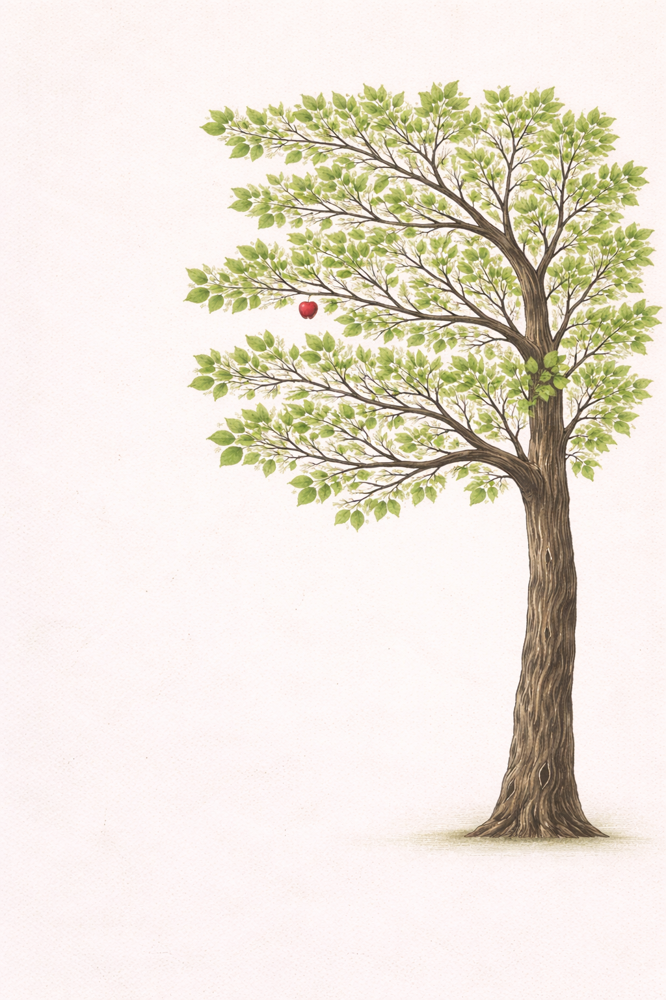

This work emerged from quiet presence. Layers of colour hold emotion that was never spoken — shaped by listening rather than observation.
Created through intuitive response, this piece carries memory, spirit, and resonance. It invites recognition — not explanation.